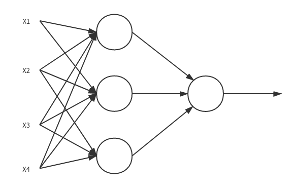
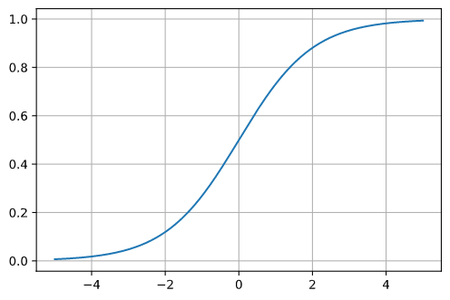
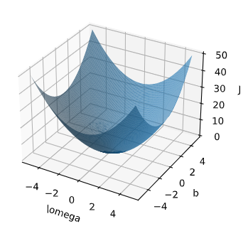
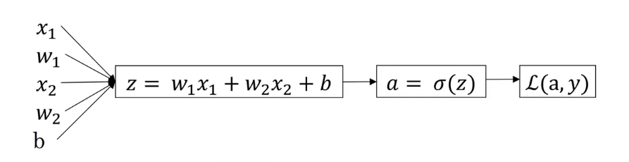
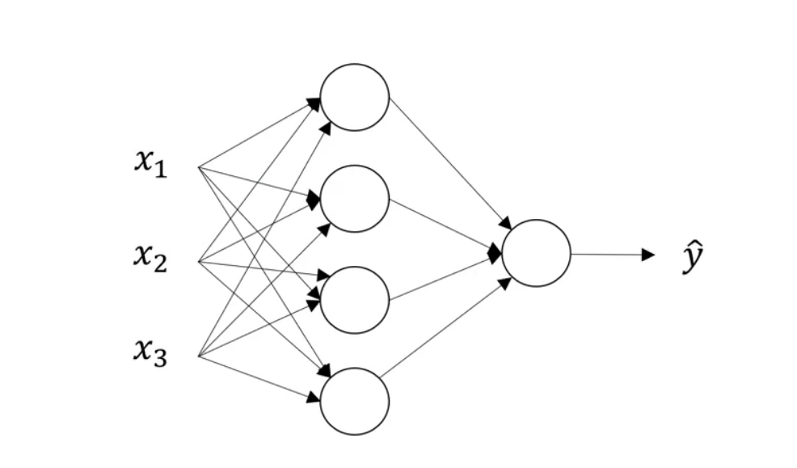
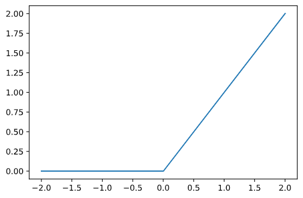

神经网络学习笔记(1)
关于神经网络的应用
关于实际使用的一个小例子
房价预测
我们可以直接得到的房子的相关数据是
- 房子的面积
- 房子的地理位置
- 房子的周边富裕程度
- 邮政
这些参数共同影响着另外一些参数例如
- 家庭人口
- 拥有车的数量
- 学校的教育质量
而这些参数直接影响着房子的价格。我们对房子价格的估算本质上是对这些参数的综合考量。而我们实际上在做的事情是如下图所示

我们将特征作为参数输入神经网络，神经网络通过这些特征来为我们判断最后的结果。
在神经网络中间的神经元被称为隐藏单元
特征的输入的那一层被称为输入层。这一层的连接数很高，因为每一个特征都连接到了中间的隐藏单元
神经网络的分类举例
上面的例子可以算是一个"标准神经网络"。而对于其他的问题我们可以使用其他的神经网络。例如在图像处理中我们使用CNN(卷积神经网络),而对于语音信号我们一般使用RNN(循环神经网络)。
关于结构化数据和非结构化数据
例子中使用的关于房子的数据属于能储存在数据库中的结构化数据，它易于被计算机读取和处理。而如语音，文本和图像就是非结构化数据，他们不易于被计算机直接处理，随着神经网络的兴起，计算机对于非结构化数据的处理效果越来越好
以logistic回归来引入神经网络基本的结构
将解决的问题 1. 理解正向传播和反向传播 2. 使用合适的方法使用样本集中的值
主要符号以及意义
我们使用\((x,y)\)来表示单独的样本,若\(x\)是一个长度为\(n_x\)的向量，表示为\(x\epsilon \mathbb{R}^{n_x}\),对于\(y\)而言，在logistic回归中\(y\epsilon\{0,1\}\)。对于第一个样本我们可以使用\((x^{(1)},y^{(1)})\)来表示1号样本，使用\((x^{(2)},y^{(2)})\)来表示第二个样本。所以对于整个样本集可以使用 \[ \{(x^{(1)},y^{(1)}),(x^{(2)},y^{(2)}),(x^{(2)},y^{(2)})...(x^{(m-1)},y^{(m-1)}),(x^{(m)},y^{(m)})\} \] 来表示。
一个实际的问题
假设我们将要识别图片中是否有一只猫,如果有猫则\(y=1\)没有猫则\(y=0\)。为了处理这个问题，输入计算机的特征向量将会是一个图像矩阵，而我们希望得到的结果是\(\widehat{y} = P(y=1|x)\)及\(y=1\)的概率。假设我们已知系数\(\omega\epsilon \mathbb{R}^{n_x}\)，参数\(b\epsilon R\)。我们很容易想到的一种用于关连起这三个值的方式如下 \[ \widehat{y} = \omega^T x+b \] 但这个函数不论是在值域范围上来说还是划分的准确性来说都不符合我们要求。我们需要的\(\hat{y}\)的区间是\([0,1]\)。而这个函数很可能会给出负数或是远大于一的结果。所以在logistic回归中，\(\hat{y}\)的值等于sigmoid函数作用在之前那个函数上，sigmoid函数的图像如下

\[ \sigma(z) = \frac{1}{1+exp(-z)} \] 当\(z\)是非常大的负数的时候,值是趋近于0的;而当\(z\)值非常大时，结果是趋近于1的。于是我们能得到一个新的函数 \[ \hat{y} = \sigma(\omega^T x+b),\sigma(z) = \frac{1}{1+exp(-z)} \] 在实际使用中可能并非只有一组\(\omega\)，\(x\)的也可能并非为1次项
关于成本函数
损失函数
在logisitc回归中我们使用loss function来衡量输出的\(\hat{y}\)与\(y\)的值的接近程度。可以直接使用方差来表示\(L(\hat{y},y)=\frac{1}{2}(\hat{y}-y)^2\),但这样会造成一个问题就是在学习某些参数的时候会出现很多局部最优解，梯度下降法可能找不到全局最优解。在logitisc回归中我们可以使用 \[ L(\hat{y},y)=-(ylog(\hat{y})+(1-y)log(1-\hat{y})) \] 来判断训练效果是否是好的。当\(y=1\)时我们希望\(\hat{y}\)的值尽可能的大，当\(y=0\)时我们希望\(\hat{y}\)尽可能的小，这个函数可以很好的帮我们来验证这一点。
成本函数
损失函数是单个样本集中定义的，它衡量了单个样本集上的训练表现。我们定义成本函数\(J\)用于描述整个样本集的训练效果，函数如下 \[ J(\omega ,b)=\frac{1}{m}\sum_{i=1}^{m}L(\hat{y},y) \] 及全部损失函数的和。在训练logicist回归模型的时候，要找到合适的\(\omega\),\(b\)使成本函数\(J\)尽可能的小
梯度下降算法
\(J\)的函数图像大致应该如下，它是一个凸函数。我们可以任选一点开始，在最开始它可能不是最小的,但我们可以不断的比较它与周边点的值的大小关系，从而找到值减小最快的方向，并在最终达到最底部，接近最优解或达到最优解。

使用梯度下降法时，我们规定这样的形式来表示\(\omega\)的值的更新 \[ \omega:=\omega-\alpha\frac{\partial J(\omega,b)}{\partial\omega} \]
正向传播与反向传播
正向传播
从输入经过一系列的运算得出结果就是正向传播。对于正向传播我们可以使用一个形象的图像来表示，这个图就被称为计算图,如下图所示，方块代表变量，圆形代表值

反向传播
反向传播（back-propagation）指的是计算神经网络参数梯度的方法。总的来说，反向传播依据微积分中的链式法则，沿着从输出层到输入层的顺序，依次计算并存储目标函数有关神经网络各层的中间变量以及参数的梯度
梯度更新的过程
回到实际问题中，根据之前的步骤，能得到以下的流程图

正向传播
图中展示了从输入值到得出结论的过程。
反向传播
若要计算\(L(a,y)\)的导数，则需要计算变量\(a\)的导数。按照之前所给的损失函数推得 \[ \begin{aligned} da & = \frac{dL(a,y)}{da} \\ & = -\frac{y}{a}+\frac{1-y}{1-a} \end{aligned} \]
再下一步，需要计算\(L\)关于\(z\)的导数。根据上一步推到的出的\(da = -\frac{y}{a}+\frac{1-y}{1-a}\)，可以得到
\[ \begin{aligned} dz & = \frac{dL}{dz} \\ & = \frac{dL}{da} \cdot \frac{da}{dz} \\ & = a-y \end{aligned} \]
接着是反向传播的最后一步，计算\(\frac{\partial L}{\partial \omega_1}\),\(\frac{\partial L}{\partial \omega_2}\),\(\frac{\partial L}{\partial b}\),有了之前的结论可以轻松计算出
\[ \begin{aligned} \frac{\partial L}{\partial \omega_1} & = x_1dz \\ \frac{\partial L}{\partial \omega_2} & = x_2dz \\ \frac{\partial L}{\partial b} & = dz \end{aligned} \]
应用到m个样本上
之前是一个样本梯度更新的过程，现在将它推广到m个样本的情况上。本质上为对m个样本的遍历，并将每次损失函数的值累加到成本函数上\(J\)
向量化
向量化可以用来减少代码中的迭代实现，来保证代码的高效性。对于CPU和GPU都有并行化的指令，使用向量化的方式可以很好的调用这些指令(比如numpy中一些函数的实现)，从而带来比循环高的多的效率
import numpy as np
import time
a = np.random.rand(10000000)
b = np.random.rand(10000000)
ti = time.time()
c = np.dot(a, b)
to = time.time()
print("Vetor version:"+str(1000*(to-ti))+"ms")
ti = time.time()
c = 0
for i in range(10000000):
c = a[i]*b[i]
to = time.time()
print("Loop version:"+str(1000*(to-ti))+"ms")
"""
Vetor version:6.173849105834961ms
Loop version:4577.560186386108ms
"""
浅层神经网络
与logistic回归的异同
在logistic回归中我们可以使用一个这样的图
来表示计算的过程，而当构建一个神经网络，参考之前给出的神经网络的示意图,我们可以将多个logistic回归组合在一起，例如这样

其中每一个最基本的单元就是一个logistic回归的计算过程,这个神经网络是一个双层神经网络，有一个隐藏层一个输出层。
激活函数
描述：在神经网络中也称作传递函数，用来描述输入与输出之间的关系。激活函数给定了节点的输入输出关系。
在之前logistic回归中使用的sigmoid函数就可以称为激活函数
激活函数在神经网络中的应用
如果不使用激活函数，那么神经网络不论多少层输出结果都是与输入线性相关的。这不利于结果去拟合那些非线性的复杂的数据。神经网络要引入激活函数来给神经网络增加一些非线性的特性，使拟合更准确。
常用的激活函数
- RelU函数
- sigmoid函数
- tanh双曲正切函数
如果不确定激活函数应该用什么，大部分都可以使用ReLU函数

随机初始化
logistic回归中可以简单的将初始参数\((\omega^{(m)},b^{(m)})\)设置成\((0,0)\)，但在神经网络中这样设置权重的效果并不好。解决问题的做法之一是通过极小随机数为每一个不同的节点设置不同的\(\omega\)和\(b\)(其实\(b\)可以不用考虑这个对称性问题)
详细可以参考译文神经网络初始化问题
神经网络中的计算
使用\({c_m}^{[n]}\)的形式来表示第\(n\)层第\(m\)个某种类型的值。
假设仍处理一个与logistic回归相似的二分预测。
对于第一层(隐藏层)神经网络我们可以列出 \[ \begin{aligned} {z_1}^{[1]} & = {\omega_1}^{[1]T} x + {b_1}^{[1]},& {a_1}^{[1]}& = \sigma(z_1^{[1]}) \\ {z_2}^{[1]} & = {\omega_2}^{[1]T} x + {b_2}^{[1]},& {a_2}^{[1]}& = \sigma(z_2^{[1]}) \\ {z_3}^{[1]} & = {\omega_3}^{[1]T} x + {b_3}^{[1]},& {a_3}^{[1]}& = \sigma(z_3^{[1]}) \\ {z_4}^{[1]} & = {\omega_4}^{[1]T} x + {b_4}^{[1]},& {a_4}^{[1]}& = \sigma(z_4^{[1]}) \end{aligned} \] 其中\(x=\{x^{(1)},x^{(2)},x^{(3)}...x^{(m)}\}\)，在图示中\(m=3\)。
对于第二层(输出层)神经网络可以列出
\[ z^{[2]} = \omega^{[2]T}a^{[1]}+b^{[2]},a^{[2]} = \sigma(z^{[2]}) \]
其中\(a^{[1]}\)是上一层的输出矩阵$a^{[1]} = \{{a_1}^{[1]},{a_2}^{[1]},{a_3}^{[1]}...{a_m}^{[1]}\}$。最终输出的\(a^{[2]}\)是一个\(1\times1\)的矩阵,所需的结果\(\hat{y}=a^{[2]}\)